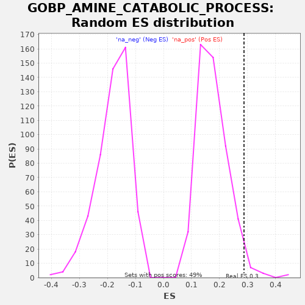

| | | Dataset | A_X_tradeoff |
| Phenotype | NoPhenotypeAvailable |
| Upregulated in class | na_pos |
| GeneSet | GOBP_AMINE_CATABOLIC_PROCESS |
| Enrichment Score (ES) | 0.2871279 |
| Normalized Enrichment Score (NES) | 1.6374316 |
| Nominal p-value | 0.02834008 |
| FDR q-value | 0.6704028 |
| FWER p-Value | 1.0 |
Table: GSEA Results Summary
 Fig 1: Enrichment plot: GOBP_AMINE_CATABOLIC_PROCESS
Fig 1: Enrichment plot: GOBP_AMINE_CATABOLIC_PROCESS
Profile of the Running ES Score & Positions of GeneSet Members on the Rank Ordered List
| SYMBOL | RANK IN GENE LIST | RANK METRIC SCORE | RUNNING ES | CORE ENRICHMENT | | 1 | IDO2 | 1919 | -0.010 | -0.0533 | Yes |
| 2 | BHMT | 1935 | -0.011 | -0.0086 | Yes |
| 3 | IDO1 | 2280 | -0.013 | 0.0191 | Yes |
| 4 | ACMSD | 3998 | -0.024 | -0.0238 | Yes |
| 5 | AFMID | 4201 | -0.026 | 0.0113 | Yes |
| 6 | PAOX | 4533 | -0.029 | 0.0397 | Yes |
| 7 | TDO2 | 4773 | -0.031 | 0.0729 | Yes |
| 8 | MAOB | 5088 | -0.034 | 0.1021 | Yes |
| 9 | ATP2B4 | 5598 | -0.040 | 0.1214 | Yes |
| 10 | CHDH | 5716 | -0.042 | 0.1608 | Yes |
| 11 | HNMT | 5742 | -0.042 | 0.2050 | Yes |
| 12 | AADAT | 5842 | -0.043 | 0.2454 | Yes |
| 13 | SAT1 | 6106 | -0.046 | 0.2773 | Yes |
| 14 | SARDH | 6799 | -0.055 | 0.2871 | Yes |
| 15 | SLC44A1 | 10040 | -0.110 | 0.1658 | No |
| 16 | KYNU | 11232 | -0.137 | 0.1500 | No |
| 17 | KYAT1 | 12242 | -0.163 | 0.1435 | No |
| 18 | MOXD1 | 12980 | -0.184 | 0.1511 | No |
| 19 | SMOX | 15480 | -0.280 | 0.0679 | No |
| 20 | ALDH7A1 | 16374 | -0.327 | 0.0674 | No |
| 21 | COMT | 17614 | -0.428 | 0.0491 | No |
| 22 | MAOA | 17884 | -0.459 | 0.0807 | No |
Table: GSEA details [plain text format]

Fig 2: GOBP_AMINE_CATABOLIC_PROCESS: Random ES distribution
Gene set null distribution of ES for GOBP_AMINE_CATABOLIC_PROCESS